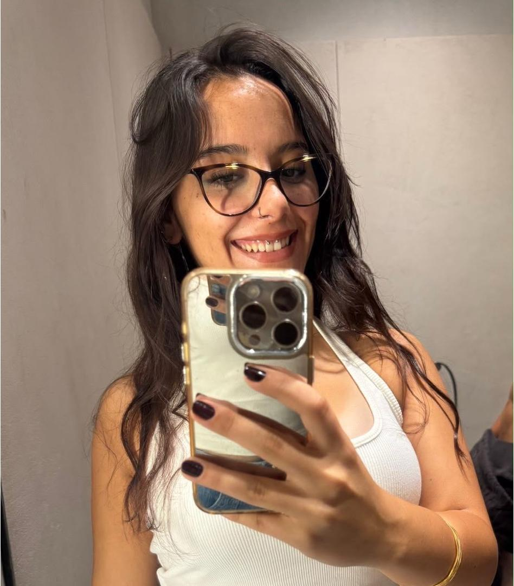
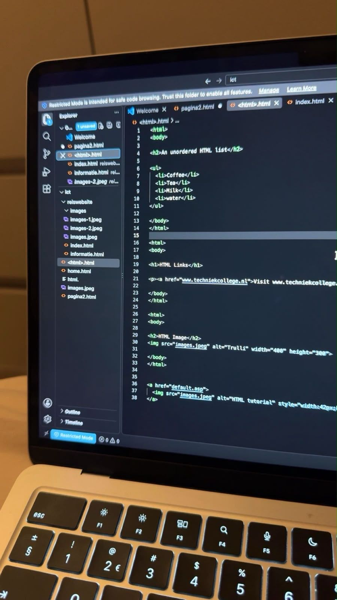

Wie ben ik?
Ik ben Dilem, 18 jaar oud en ik volg de opleiding Software Developer op MBO niveau 4. Ik heb veel interesse in ICT, programmeren en webdevelopment. Op dit moment leer ik de basis van programmeren en ontwikkel ik stap voor stap mijn technische vaardigheden. Ik ben leergierig, gemotiveerd en vind het leuk om nieuwe dingen te leren en problemen op te lossen. Mijn doel is om mij verder te ontwikkelen als Software Developer en steeds meer ervaring op te doen met het maken van software en websites.


Mijn portfolio
Op deze website laat ik zien wie ik ben en waar ik tijdens mijn opleiding aan werk. Deze website is ook een van mijn eerste projecten met HTML en CSS.

Mijn projecten
Tijdens mijn opleiding werk ik aan verschillende opdrachten en projecten. Hier kan ik laten zien wat ik heb gemaakt en hoe mijn werk zich stap voor stap ontwikkelt.
Mijn ontwikkeling
Ik sta nog aan het begin van mijn opleiding. Daarom wil ik mijn voortgang bijhouden en laten zien hoe ik mij tijdens mijn opleiding verder ontwikkel.